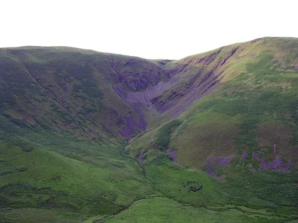

4
days
Wednesday pickup to Saturday morning return
Your confirmed four-day run: Rockhill Guest House on Wednesday night, Lodge on the Loch at Onich on Thursday, a forecast-aware scenic Friday to Edinburgh, then the planned Wetherby rest before Saturday’s return.
23°C / 13°C. Sunny intervals, staying largely dry. Good conditions for the long run north.
Overcast and misty, with the driest window roughly midday to late afternoon; rain becomes more likely in the evening.
Rainy around Glencoe early, then lower rain risk around Loch Tay and sunny intervals in Edinburgh.
About 14–16°C before dawn, cloudy with only a small early rain chance.
Edit the names below. They save on this device. Swap roles at every major stop—before either of you feels tired.
Rental inspection, London exit, first M11/A14/M6 block. Hands over before the long day becomes a test of pride.
Owns route checks, legal parking and photo timing. Becomes the primary driver after the first proper break.
“No trophies for arriving tired. The road is the event.”
Each day has a single purpose. Wednesday gets you into Scotland. Thursday delivers the cinematic Highlands. Friday earns the long route east. Saturday gets you home.

Collect 08:00–08:30, photograph the Enterprise SUV, leave around 09:00. M11 → A14 → M6, Tebay lunch, then check in at Rockhill before any optional sunset detour.

Leave around 07:15 if Rockhill can arrange an early breakfast. Loch Lomond and Rannoch Moor lead into a chairlift stop at Glencoe Mountain Resort, followed by a shortened Glen Etive and Glencoe photo run before Lodge on the Loch.

The current forecast favours moving east: Glencoe, Killin, the north shore of Loch Tay, Aberfeldy and South Queensferry. Glen Quaich is now a dry-road-only bonus.

Leave Edinburgh around 18:30–19:00. A720 → A1/A1(M), paid rest at Wetherby for roughly 5–6 hours, then continue only when genuinely alert.
The overview above is the dashboard. These are the actual chapters you use on the road.

The objective is simple: collect the Enterprise SUV, escape London cleanly and reach your confirmed room at Rockhill Guest House within its check-in window.
| Time | Plan | Why |
|---|---|---|
| 08:00–09:00 | Collect the rental, add both drivers, photograph every panel/wheel and confirm Saturday key-drop. | Do not discover mileage or damage issues after 1,000 miles. |
| ≈09:00 | East London → M11 → A14 → M6. | Avoids dragging the trip through central London. |
| 11:00–11:20 | First short driver change and coffee. | Swap before fatigue appears. |
| 13:45–14:30 | Tebay Services: lunch, walk and fuel check. | The one motorway stop worth making part of the trip. |
| 17:00 onward | Devil’s Beef Tub only if timing, visibility and energy are good. | A scenic opening frame, but completely optional. |
| 16:30–17:15 | Check in at Rockhill Guest House, 14 Beechgrove, DG10 9RS. | The published check-in window ends at 17:00, so call the host if the rental desk or traffic delays you. |
| 18:00 onward | Optional Devil’s Beef Tub sunset out-and-back after check-in. | Wednesday is forecast dry; do it only after the room and parking are sorted. |

The chairlift is the default because it fits the route. Tubing is the fun add-on. The bigger adventures below are genuine itinerary replacements—not extras to stack onto an already full day.
Best balance of experience and schedule. Budget about 75–90 minutes including the return ride, views and a quick café stop. Current summer adult return price: £20.
A 30-minute session costs £10 per person. Add it after the chairlift, but shorten Glen Etive to a focused viewpoint run.
Vertical Descents operates from Inchree, very close to Lodge on the Loch. This is the proper wet-and-wild option, but allow a half-day and pre-book; it replaces the resort and most of Glen Etive.
An enclosed 15-minute gondola climbs to 650m, with 40- and 60-minute viewpoint walks. Adult 2026 day ticket: £28.95. It sends you north of Fort William, so it replaces Loch Tay/Glen Quaich rather than joining that route.
A low-commitment backup if the lift is suspended. Current price is £6 per adult. Keep a firm 60-minute cap so you still reach Onich comfortably.
A waymarked waterfall and woodland route near Onich. Allow roughly 1½–2½ hours. Use it on Thursday evening only if you arrive early, or as a calmer Friday replacement.
The main Highland day now combines the road trip with a real mountain experience: Loch Lomond, Rannoch Moor, Glencoe Mountain Resort, then a flexible Glen Etive and Glencoe run before your confirmed Onich hotel.
| Time | Plan | Decision rule |
|---|---|---|
| 07:15 preferred | Leave Rockhill via M74, Glasgow’s western side and A82. | Arrange early breakfast. A normal 08:00 breakfast means using the shortest Glen Etive edit. |
| 09:25–09:50 | Quick Loch Lomond coffee/photo stop if parking is easy. | One shoreline frame, then move. |
| 10:50–11:15 | Tyndrum / Green Welly fuel and facilities. | Top up before Rannoch Moor. |
| 11:45–13:15 | Glencoe Mountain Resort: chairlift return, plateau photos and café. | Check the live lift status that morning; operations are weather-dependent. |
| 13:15–13:50 | Optional 30-minute tubing session. | Adding tubing means a shorter Glen Etive run. |
| 14:05–15:35 | Buachaille viewpoint and Glen Etive partial out-and-back. | Use a strict turnaround time; do not force the full road to Loch Etive. |
| 15:50–17:00 | Three Sisters and one Glencoe village stop. | Cloud and drizzle can improve the photographs. |
| 17:00–18:00 | Glencoe → Ballachulish Bridge → Lodge on the Loch, Onich. | Aim to arrive before evening rain and before the Ballachulish works begin at 19:00. |


Rain is most likely on the west coast early, while Edinburgh is brighter. The recommended route still gives you Glencoe, Killin and Loch Tay, but uses Aberfeldy and the A9 rather than forcing a wet Glen Quaich.
Use this by default: it preserves the beautiful A827 along Loch Tay but avoids committing to wet, steep single-track roads. Friday’s current forecast improves as you move east.
Add only if: Friday morning is drier than forecast, visibility is good, there is no standing water and both drivers are fresh. This adds roughly 45–60 minutes and reduces Edinburgh time.
Decision point: use the Aberfeldy route unless the road is clearly drying by Killin. Never decide after entering Glen Quaich.
One hero frame per location. The Friday drive collapses if every bend becomes a twenty-minute shoot.
Browse or buy in Edinburgh, but both named drivers stay alcohol-free until the rental is returned.
It is west of the city, free and tram-served; the site operates 04:00–02:00 and strictly prohibits overnight parking. You are leaving that evening, so it fits. Use Hermiston if Ingliston is event-full or the schedule becomes uncertain.
The final leg is designed around sleep, not continuous overnight driving. Edinburgh ends the sightseeing; Wetherby resets the drivers; Saturday morning completes the journey.
| Time | Plan | Rule |
|---|---|---|
| 18:30–19:00 Fri | Leave Ingliston/Hermiston via A720 → A1 south. | Check National Highways closures before moving. |
| ≈21:00 | Washington-area fuel, food and driver change. | Take 15–20 minutes even if both feel fine. |
| ≈22:30 | Arrive at Moto Wetherby and pay the 2–24 hour car-parking tariff. | Keep the payment confirmation. |
| 22:45–04:30 | Engine off, doors locked, slight ventilation, eye masks and blankets. Test the actual Qashqai/similar seat-folding layout before Edinburgh. | This is planned sleep—not a quick nap. Do not assume the cargo floor will be flat. |
| 04:30–05:00 Sat | Continue only if the next driver is genuinely alert. | If groggy, sleep longer. Arrival time does not matter. |
| ≈06:45 | One additional break around Peterborough/Stamford/Baldock depending on live routing. | Swap drivers again. |
| ≈08:30–10:00 | Reach East London, unload and complete the rental return. | Photograph fuel gauge, mileage and the car again. |


Tick it here; the page remembers on this device. This is the boring part that protects the fun part.
A good two-person motorway and Highland car. Treat it as a normal intermediate SUV—not a guaranteed 4×4. At pickup, verify the actual fuel type, gearbox, tyre kit and driver-assistance controls.
Let faster local traffic pass, acknowledge considerate drivers and never stop for a photograph where you block the road.
Pay for the stay, engine off, ventilate slightly and target 5–6 hours stopped. Continue only when genuinely alert.